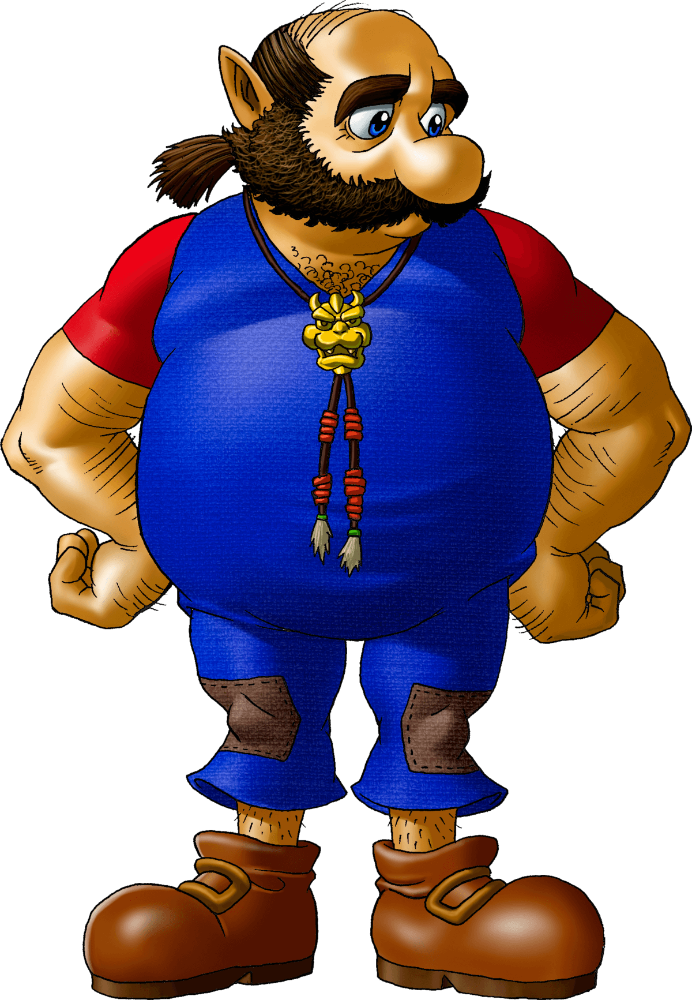
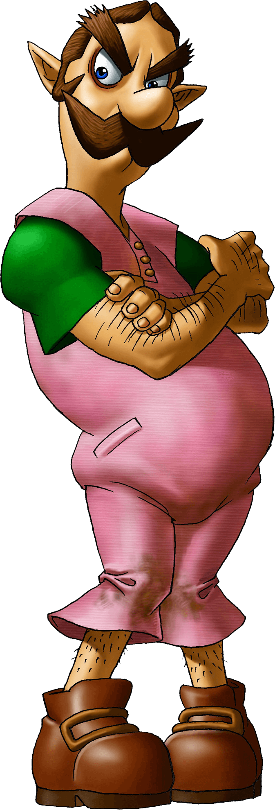
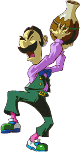
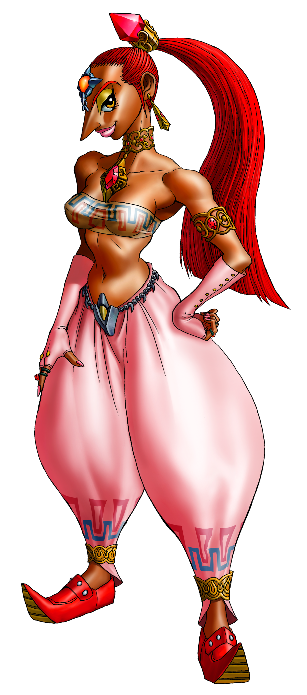
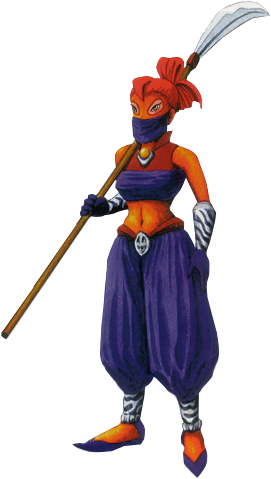
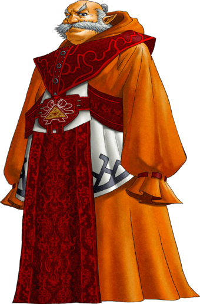
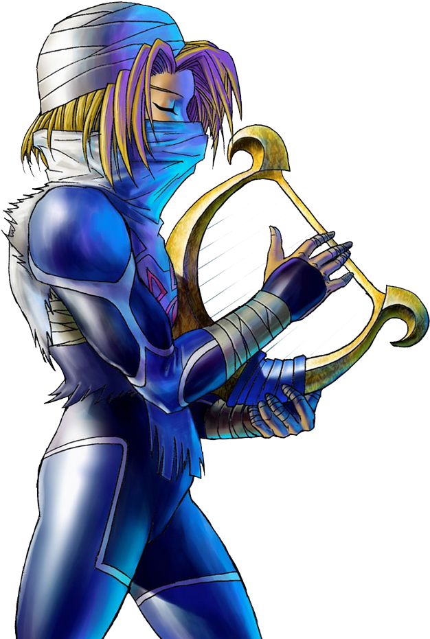
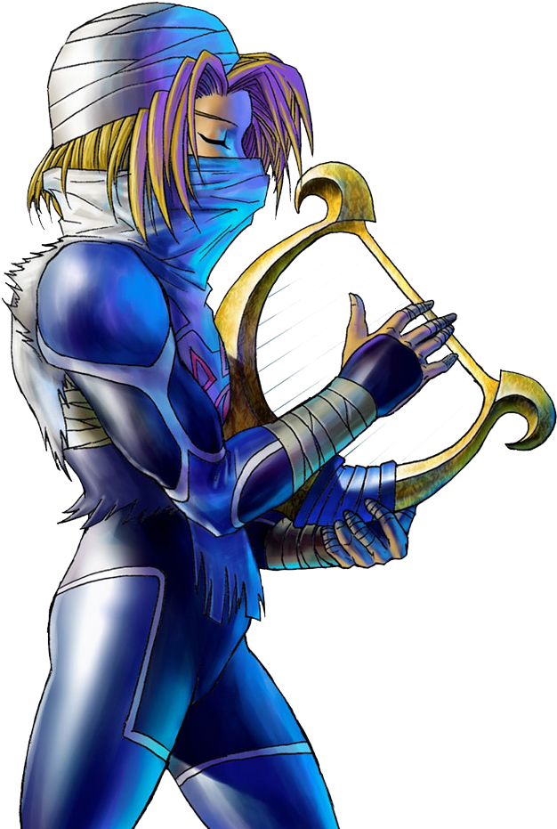
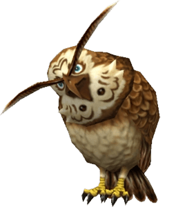
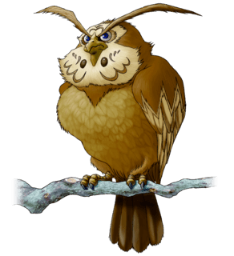

Navy
A pequena fada guardiã de Link. Navi é uma criatura muito amável e dedicada. Sempre está pronta para aconselhar e proteger Link em sua aventura. Cada Kokiri tem a sua própria fada guardiã, mas Navi, pelo apego que adquiriu a Link, fica com Link mesmo após descobrir que ele não é um Kokiri.
Saria
A melhor amiga de Link. Saria também vive na Kokiri Forest e, como é uma Kokiri, nunca cresce, ficando sempre na forma de criança. Ela passa a maior parte de seu tempo com Link e adora tocar a sua Ocarina. Por sua forte ligação com Link, Saria não se separe dele nem quando está longe, eles podem conversar telepaticamente através da Ocarina.
Princessa Ruto
Filha do Rei Zora, Ruto não passa de uma menina mimada. Ela tem a Zora’s Sapphire, dada por sua mãe. Apesar de ser uma criança sem juízo, muito atirada e arrogante, Ruto amadurece bastante com o tempo.
Princessa Ruto
O líder dos Zoras, o povo da água. Rei Zora é muito respeitado entre os de seu povo e também pelas pessoas de fora. Ele é uma pessoa calma e quieta, mas ao mesmo tempo gentil. Ao contrario da maioria de seu povo, ele é enorme e lento. Pai da Princesa Ruto, ele não tem nada a ver com sua filha, principalmente no que se trata de temperamento e personalidade.

Mido
O pequeno líder dos Kokiris, Mido é uma criança com espírito de velho, e bem rabugento. Ele não vai com a cara de Link. Na realidade, Mido tem inveja dele porque a Deku Tree o protege em especial. Não entendendo porque ele, sendo o líder, não é o preferido.


Darunia
Líder dos Gorons, Darunia é um cara alegre e amável que adora dançar ao som de músicas agradáveis. Mas não é bom aborrecê-lo, pois Darunia pode ficar realmente muito bravo e não vai querer ver ninguém na sua frente. Ele se revelará muito corajoso e terá uma ligação muito forte com Link.
Epona
Égua e fiel companheira de Link, foi presente de Malon para ele.

Talon
O preguiçoso proprietário de Lon Lon Ranch. Talon fornece leite para todas as partes de Hyrule e, não raro, entrega pessoalmente as garrafas de leite ao castelo de Hyrule. Claro que ele não dispensa uma cochiladinha de vez em quando, seja lá qual for o lugar.
Malon
Filha de Talon, o proprietário do Lon Lon Ranch. Malon adora o lugar em que vive e principalmente do estábulo, onde brinca e alimenta os cavalos. Ela tem um carinho especial pela égua Epona. Malon ainda gosta de cantar.
 
Ingo
Único empregado de Talon, responsável por toda a organização, limpeza, alimentação dos animais e outros trabalhos pesados no Lon Lon Ranch. Ingo não gosta muito disso, dizendo que Talon é um preguiçoso e que ele é quem cuida de todo o trabalho pesado, considerando que o rancho deveria ser dele por isso.
 
Nabooru
Uma figura muito popular entre a sua raça, os Gerudos, raça de ladras. Na hierarquia dos Gerudos, Nabooru está abaixo apenas para Ganondorf. Apesar da fama de seu povo, ela tem planos um pouco diferentes.

Rauru
O lendário sábio que construiu o Templo do Tempo para proteger a sagrado Triforce. Rauru servirá como um revelador para a nova fase de Link, quando ele se encontra na forma adulta
.png) 

Sheik
Uma das figuras mais misteriosas do jogo. Tudo o que se sabe é que ele é um Sheikah, o povo das sombras, muito sábio e quer ajudar Link em suas tarefas, aparecendo sempre que o garoto precisa de ajuda, mas desaparecendo com a mesma facilidade, sem deixar nenhum vestígio.
 
Kaepora Gaebora
A misteriosa coruja que segue os passos do pequeno Link e dá uma porção de informações, direcionando o garoto em suas tarefas. Dizem que ela é uma reencarnação de um antigo sábio.